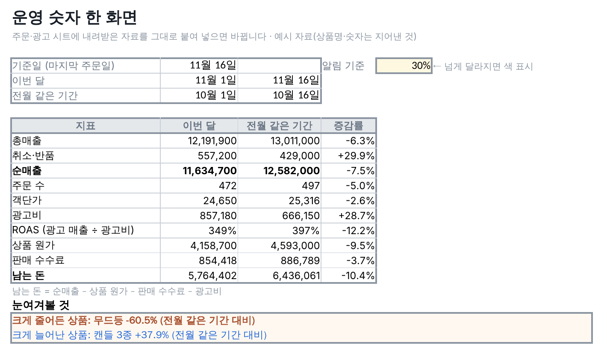
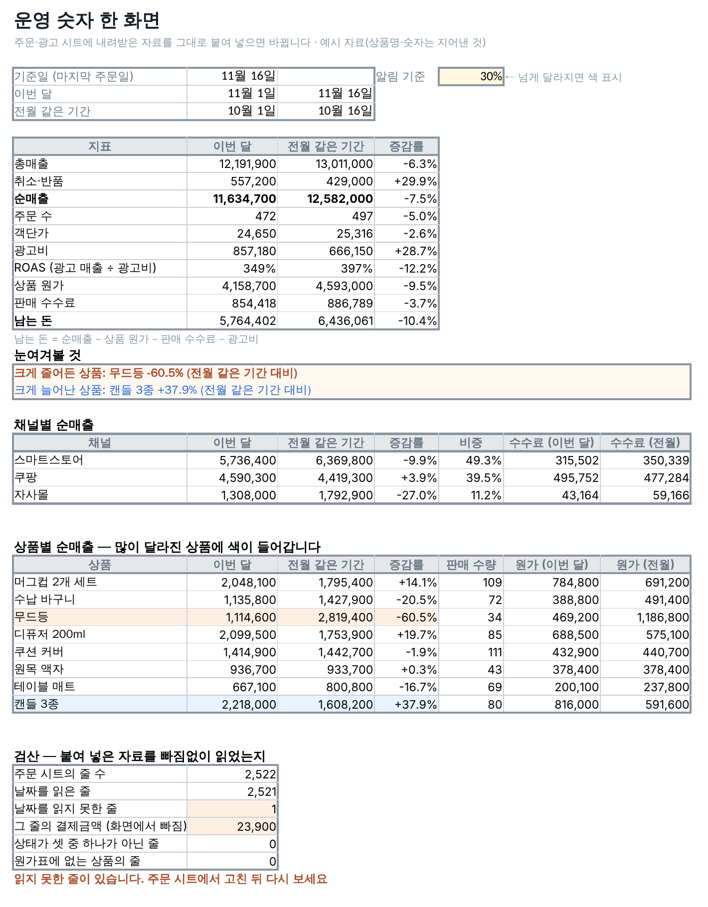

주문 내역을 내려받고, 광고비를 따로 붙이고, 지난달과 견주는 일. 자료만 붙여 넣으면 화면이 바뀌게 만들어 드려요.
처음 세 곳은 10만원 · 구글 시트와 엑셀 모두 돼요 · 자료를 받은 날부터 7일
reflo2026@naver.com · 평일에는 저녁에 답드려요

예시 자료로 만든 시트예요. 상품명과 숫자는 지어낸 것이에요 · 예시 시트 받아 보기 (엑셀, 구글 시트에서도 열려요)
사장님이나 담당자 한 분이 매주 숫자를 손으로 정리하는 곳이에요.
화면 하나와, 그 화면이 매달 굴러가게 하는 틀이에요.

전체 순매출은 7% 줄었는데, 한 상품은 60% 줄어 있었어요. 아래 검산은 날짜를 못 읽은 한 줄을 잡아냈어요
값을 낮춘 대신 부탁드리는 것이 하나 있어요.
사업자등록을 한 개인사업자예요. 계좌이체로 받고 세금계산서나 현금영수증을 드려요 · 후기는 부탁드리지 않아요
지금 어떤 숫자를 얼마나 자주 정리하시는지, 자료를 어디서 내려받으시는지, 한 화면에서 꼭 보고 싶은 숫자 다섯 가지.
화면에 들어갈 숫자와 기한을 먼저 맞춰요. 맞지 않는 일이면 그때 말씀드려요.
한 달치면 돼요. 넘기기 어려우시면 파일의 첫 줄(열 제목)만 보내 주셔도 돼요. 그 항목대로 예시 자료를 만들어 작업해요.
실제 자료를 붙여 넣어 숫자가 맞는지 같이 확인하고 드려요.
메일 제목에 「파일럿」이라고 적어 주시면 세 가지 질문으로 답드려요.
자료를 넘기기 어려우시면 파일의 첫 줄(열 제목)만 보내 주셔도 돼요.
reflo2026@naver.com · 크몽에서 보고 오셨다면 크몽 메시지로 문의해 주세요